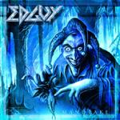

|
|
||
Edguy : Mandrake (2001) |
|

http://www.edguy.nu |
1. Tears of a Mandrake 7:11 |
8.5/10 |
|
"Mandrake" es seguramente el mejor album de Edguy hasta la fecha. Tobias Sammet, cantante y líder de este grupo ha conseguido otro gran disco, después de realizar la primera parte de "Avantasia", reconocido casi unánimente como uno de los mejores, o el mejor, disco de power metal del año.Y quizás esto sea lo más criticable del disco: Tobias explota los recursos típicos del power metal (batería rápida, incluso doble bombo, buena voz con buen registro, guitarras brillantes etc.) y junto a estribillos pegadizos y resultones logra un disco que enseguida capta la atención del oyente y que consigue mantenerla. Exactamente igual que en "Avantasia". De todas formas esto es mucho más fácil de decir que de hacer, y mientras Tobias Sammet siga componiendo buenas canciones, seguirá sacando buenos discos, en solitario o con Edguy. "Tears of a Mandrake" la primera canción del disco es un gran ejemplo de power metal, que combina teclados y guitarras con una buena voz, y una estructura que culmina en un estribillo pegadizo, cantado a coro (como casi todos los del disco) y que es uno de los momentos clave del disco. "Golden Dawn" explota otro de esos recursos que hacen del power metal lo que es: los cambios de ritmo y de tono de voz que consiguen que el oyente se deje llevar por la música. "All the Clowns" tiene el estribillo que más me ha gustado del disco, melódico y potente, alternando entre voces a coro y la voz de Tobias en solitario."Nailed to the Wheel" comienza despacio, pero pronto surge toda la potencia que puede mostrar Edguy, que llega a su punto álgido en el estribillo, y en los solos de guitarra de esta canción, sin duda los momentos más explosivos del disco. "The Pharaoh" es una canción larga, aunque no se hace pesada, épica, compleja, con cambios de ritmo, coros a varias voces, y en suma todos los elementos que tan bien maneja el señor Sammet para hacer grandes canciones. "Wash Away the Poison" es una balada en toda regla, conmovedora y brillantemente ejecutada por Tobias. "Painting on the Wall" merece que destaque su estribillo, que es de lo primero que se queda cuando escuchas el album. La letra de "Save us Now" realmente no tiene desperdicio. Más que nada porque trata de un conejito alienígena que toca la batería a toda velocidad... Finalmente, en mi copia del disco aparece como bonus track "The Devil & the Savant" una canción que hubiera merecido perfectamente un sitio en el album como una canción más, no como bonus, lo que es otra prueba más de la creatividad que desborda Tobias Sammet. |
||
Rubén Béjar |
||